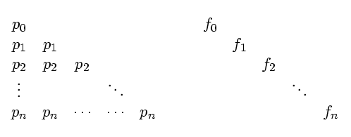

A Simple Solution to a Bandwidth Pricing Anomaly
Martin I. Reiman Wim Sweldens

Abstract:
We show that it is much safer to compute bandwidth spot prices from
forward prices than vice versa. Our observation eliminates a
geographic arbitrage opportunity in forward prices pointed out by
Chiu and Crametz.
Status:
Technical Memorandum, Bell Laboratories, Lucent Technologies,
February 2001.
Dates:
| February 2001:
|
Initial posting & submission.
|
Download:
PDF v3.0 (.pdf) (30K).
Links:
Surprising pricing, Original paper by S. Chiu and J.-P. Crametz.